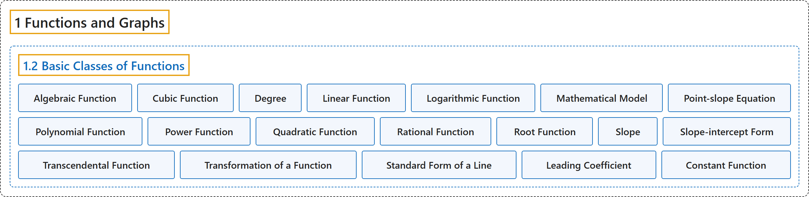

1.2 Basic Classes of Functions
Classification

Glossary
| Term | Definition | 中文翻译 | Source |
|---|---|---|---|
| 1 Functions and Graphs 函数与图像 |
(No definition) | （无定义） | Strang & Herman, 2016a, chapter 1 |
| 1.2 Basic Classes of Functions 函数的基本类型 |
(No definition) | （无定义） | Strang & Herman, 2016a, section 1.2 |
| Algebraic Function 代数函数 |
"a function involving any combination of only the basic operations of addition, subtraction, multiplication, division, powers, and roots applied to an input variable \(x\)" | 只对输入变量 \(x\) 施加加、减、乘、除、乘方和开方这些基本运算的任意组合所得的函数 | Strang & Herman, 2016a, chapter 1 Key Terms |
| Cubic Function 三次函数 |
"a polynomial of degree 3; that is, a function of the form \(f(x)=ax^{3}+bx^{2}+cx+d,\) where \(a\ne 0\)" | 3 次多项式；即形如 \(f(x)=ax^{3}+bx^{2}+cx+d,\) 的函数，其中 \(a\ne 0\) | Strang & Herman, 2016a, chapter 1 Key Terms |
| Degree 次数 |
"for a polynomial function, the value of the largest exponent of any term" | 对多项式函数而言，任一项的最大指数的值 | Strang & Herman, 2016a, chapter 1 Key Terms |
| Linear Function 线性函数 |
"a function that can be written in the form \(f(x)=mx+b\)" | 可以写成 \(f(x)=mx+b\) 形式的函数 | Strang & Herman, 2016a, chapter 1 Key Terms |
| Logarithmic Function 对数函数 |
"a function of the form \(f(x)={\log }_{b}(x)\) for some base \(b>0,b\ne 1\) such that \(y={\log }_{b}(x)\) if and only if \(b^{y}=x\)" | 形如 \(f(x)={\log }_{b}(x)\) 的函数，对某个底 \(b>0,b\ne 1\) 满足：\(y={\log }_{b}(x)\) 当且仅当 \(b^{y}=x\) | Strang & Herman, 2016a, chapter 1 Key Terms |
| Mathematical Model 数学模型 |
"A method of simulating real-life situations with mathematical equations" | 用数学方程模拟现实情境的一种方法 | Strang & Herman, 2016a, chapter 1 Key Terms |
| Point-slope Equation 点斜式方程 |
"equation of a linear function indicating its slope and a point on the graph of the function" | 表明斜率和图像上一点的线性函数方程 | Strang & Herman, 2016a, chapter 1 Key Terms |
| Polynomial Function 多项式函数 |
"a function of the form \(f(x)=a_{n}x^{n}+a_{n-1}x^{n-1}+\ldots +a_{1}x+a_{0}\)" | 形如 \(f(x)=a_{n}x^{n}+a_{n-1}x^{n-1}+\ldots +a_{1}x+a_{0}\) 的函数 | Strang & Herman, 2016a, chapter 1 Key Terms |
| Power Function 幂函数 |
"a function of the form \(f(x)=x^{n}\) for any positive integer \(n\ge 1\)" | 形如 \(f(x)=x^{n}\) 的函数，其中 \(n\ge 1\) 为任意正整数 | Strang & Herman, 2016a, chapter 1 Key Terms |
| Quadratic Function 二次函数 |
"a polynomial of degree 2; that is, a function of the form \(f(x)=ax^{2}+bx+c\) where \(a\ne 0\)" | 2 次多项式；即形如 \(f(x)=ax^{2}+bx+c\) 的函数，其中 \(a\ne 0\) | Strang & Herman, 2016a, chapter 1 Key Terms |
| Rational Function 有理函数 |
"a function of the form \(f(x)=p(x)/q(x),\) where \(p(x)\) and \(q(x)\) are polynomials" | 形如 \(f(x)=p(x)/q(x),\) 的函数，其中 \(p(x)\) 和 \(q(x)\) 是多项式 | Strang & Herman, 2016a, chapter 1 Key Terms |
| Root Function 根式函数 |
"a function of the form \(f(x)=x^{1/n}\) for any integer \(n\ge 2\)" | 形如 \(f(x)=x^{1/n}\) 的函数，其中 \(n\ge 2\) 为任意整数 | Strang & Herman, 2016a, chapter 1 Key Terms |
| Slope 斜率 |
"the change in y for each unit change in x" | x 每变化一个单位时 y 的变化量 | Strang & Herman, 2016a, chapter 1 Key Terms |
| Slope-intercept Form 斜截式 |
"equation of a linear function indicating its slope and y-intercept" | 表明斜率和 y 截距的线性函数方程 | Strang & Herman, 2016a, chapter 1 Key Terms |
| Transcendental Function 超越函数 |
"a function that cannot be expressed by a combination of basic arithmetic operations" | 不能用基本算术运算的组合表示的函数 | Strang & Herman, 2016a, chapter 1 Key Terms |
| Transformation of a Function 函数的变换 |
"a shift, scaling, or reflection of a function" | 函数的平移、伸缩或反射 | Strang & Herman, 2016a, chapter 1 Key Terms |
| Standard Form of a Line 直线的一般式 |
"where \(a,b\) are both not zero, to denote the standard form of a line." | 其中 \(a,b\) 不同时为零，用来表示直线的一般式。 | Strang & Herman, 2016a, section 1.2 |
| Leading Coefficient 首项系数 |
"The value \(n\) is called the degree of the polynomial; the constant \(a_{n}\) is called the leading coefficient." | 值 \(n\) 称为多项式的次数；常数 \(a_{n}\) 称为首项系数。 | Strang & Herman, 2016a, section 1.2 |
| Constant Function 常函数 |
"A polynomial of degree 0 is also called a constant function." | 0 次多项式也称为常函数。 | Strang & Herman, 2016a, section 1.2 |
References
Strang, G., & Herman, E. (2016a). Calculus volume 1. OpenStax. Retrieved October 29, 2026, from https://openstax.org/details/books/calculus-volume-1